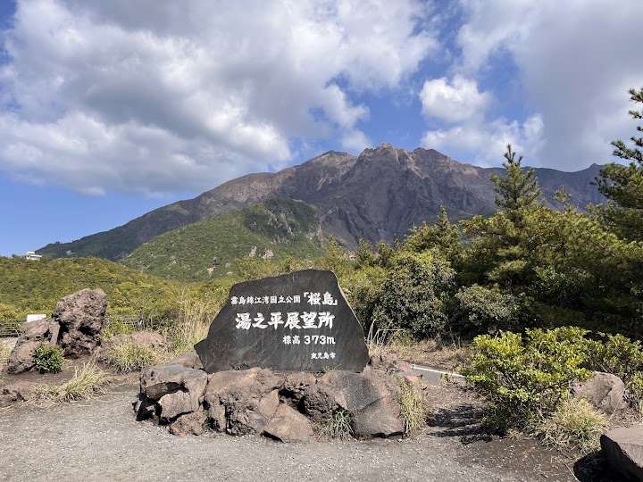
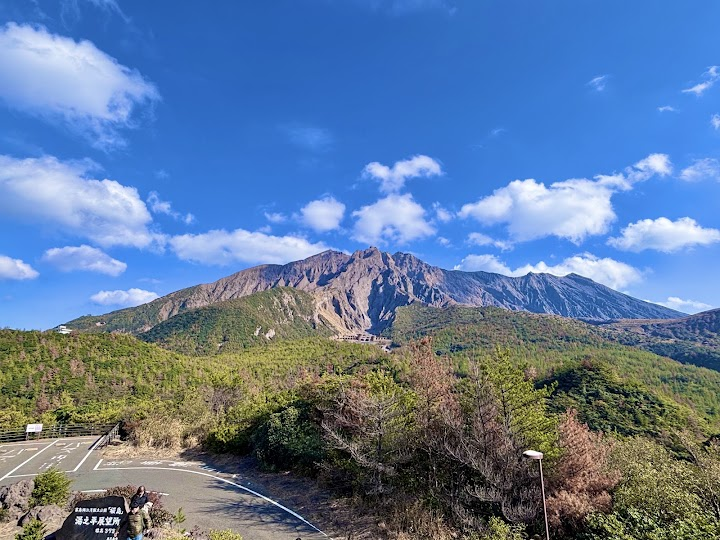
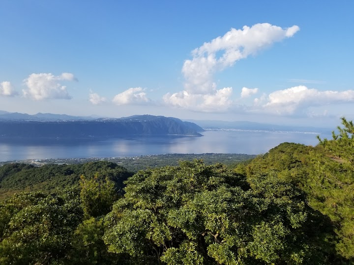
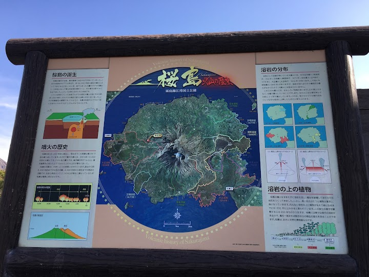
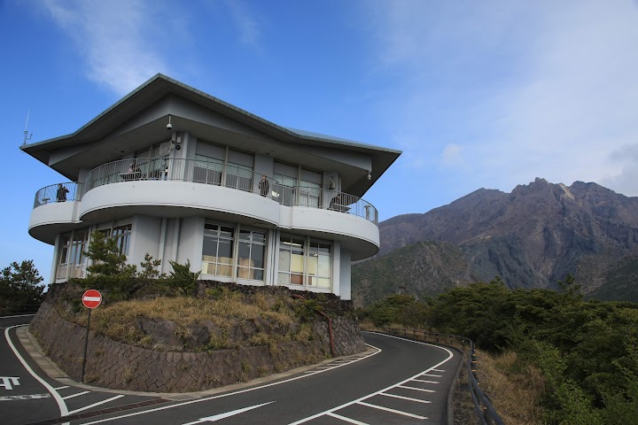

Yunohira Observation Deck
Panoramic views over lava fields, the wooded slopes of Mount Sakurajima volcano & Kagoshima Bay.
Open in Google Maps (street view, more photos and reviews there)






Visitor tips on finding it and getting there
This is one of the best places to get close to the volcano without having a car. The sightseeing loop bus makes it very convenient for visitors. One great point is that the bus stops here for about 15 minutes. This gives you enough time to walk around, take photos, and enjoy the scenery before hopping back on the same bus without needing to wait for the next one. The view of Kagoshima and the surrounding area is impressive, especially on a clear day. You really feel the power and scale of Sakurajima up close. There are no cafes or shops around, only vending machines. A must visit spot when
The views from the Yunohira Observation Deck are definitely impressive — you get an almost panoramic look at Sakurajima’s active volcano, Kinko Bay, and even Kagoshima City in the distance. On a clear day the landscape and volcanic plumes make for some truly dramatic photos, and it’s one of the closest public spots you can reach for that perspective.  The deck itself is easy to access by car or the Sakurajima Island View bus, and there are small info displays about the geology and history of the area which add context to the scenery.  However, it isn’t perfect. If the weather’s cloudy or
The whole island/volcano experience was a dud. The bus around the island had us packed in like sardines. There are multiple stops all of which can be taken in within 5 or 10 mins but then it's a 30min wait to the next bus. It was all totally underwhelming. One stop had an hour wait for the next bus. Avoid that stop. The stops are numbered but totally confusing. Not a winning day except the volcano erupted which was very cool.